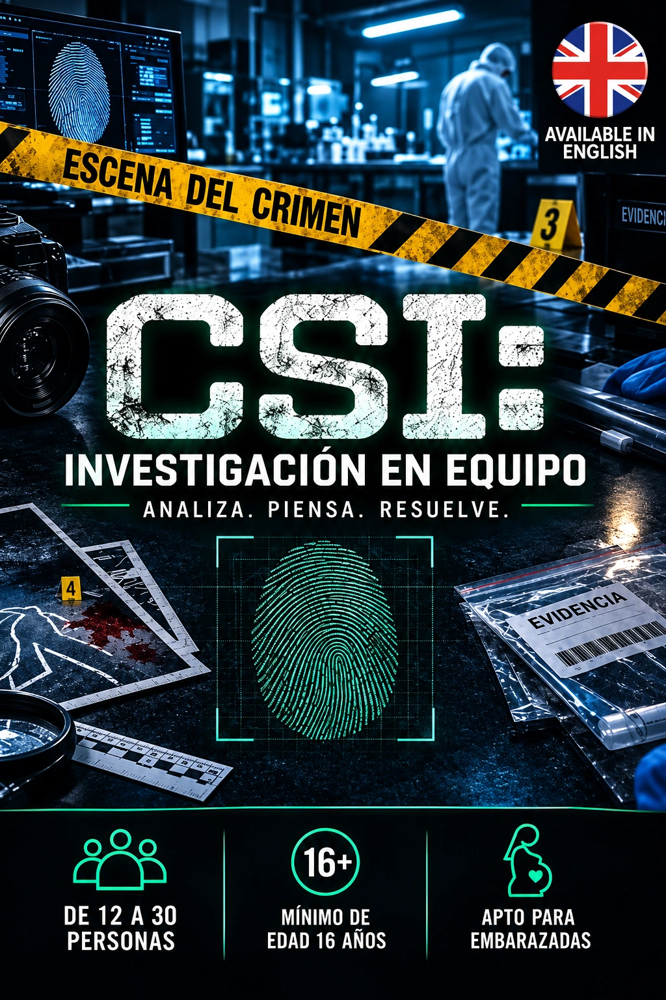

Ficha de catálogo
CSI: Investigación en Equipo
Open Mind
Ficha de CSI: Investigación en Equipo de Open Mind en Cornellà de Llobregat, con datos de ubicación, duración, jugadores y enlaces de consulta.

Ficha de CSI: Investigación en Equipo de Open Mind en Cornellà de Llobregat, con datos de ubicación, duración, jugadores y enlaces de consulta.
¡Un crimen sin resolver, una escena llena de interrogantes y 90 minutos para descubrir la verdad!
Ha llegado el momento de sacar vuestro instinto de detectives y convertiros en un auténtico equipo de investigación criminal. Una misteriosa escena del crimen os espera, repleta de pistas, huellas y evidencias que podrían esconder las respuestas que estáis buscando.
Pero resolver el caso no será tan sencillo... Tendréis que examinar cada detalle, analizar las pruebas, conectar indicios aparentemente inconexos y elaborar vuestras propias hipótesis para reconstruir lo sucedido. ¡Cualquier pequeño descubrimiento podría dar un giro inesperado a la investigación!
En esta experiencia, la clave del éxito será el trabajo en equipo. Compartid vuestros hallazgos, contrastad sospechas y combinad vuestra capacidad de observación, lógica y deducción. Porque una pista que parece insignificante para un investigador puede ser justo la pieza que otro necesita para encajar todo el rompecabezas.
CSI es una experiencia de investigación diseñada para grandes grupos de entre 12 y 30 participantes, donde todos tendrán la oportunidad de implicarse en la resolución del misterio. No importa si sois detectives experimentados o si es vuestra primera misión: recibiréis las instrucciones necesarias antes de comenzar.
Además, podréis disfrutar de la experiencia de dos maneras: en La Previa Burger Shop de Cornellà de Llobregat, combinando la investigación con una comida o cena, o en vuestro propio espacio, gracias a su modalidad a domicilio disponible en el área de Barcelona, donde el equipo de Open Mind se encarga de llevar y organizar toda la actividad.
Una propuesta ideal para grupos de amigos, celebraciones, actividades de empresa y encuentros donde la colaboración y el ingenio serán vuestros mejores aliados.
Las pruebas están sobre la mesa, los interrogantes se acumulan y la verdad espera ser descubierta... ¿Seréis capaces de conectar todas las piezas y resolver el caso?